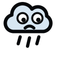

// robocze · do wyboru
trzy warianty logo
Wszystkie w tej samej sylwetce chmury (smutna chmurka z oczkami), różnią się tylko językiem formy. Przy każdym rozmiary 24 / 64 / 170 px — to, co widać w tych najmniejszych, będzie widać też jako favicon.


A — flat
Jedna bryła, twarz „wycięta" kolorem tła. Najmocniejszy, najlepiej trzyma się w małym rozmiarze (favicon, stopka).

B — outline
Sam kontur, jedna grubość linii. Elegancki, działa w jednym kolorze (druk, stopka, wersja mono).

C — naklejka
Gruby kontur, wielkie oczy, klimat mascota/naklejki. Najbardziej „osobisty", ale najwięcej się dzieje.
